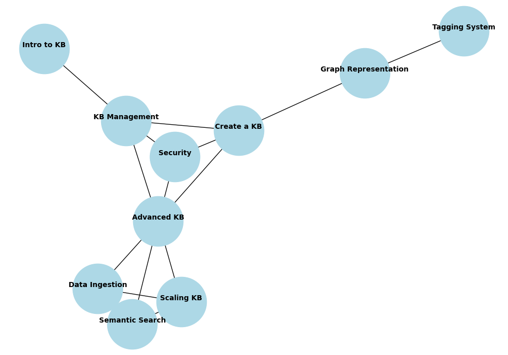

Building a Knowledge Base with FastAPI, NetworkX, and Docker in 10 minutes
Table of Contents
Introduction
Building a knowledge base (KB) allows organizations to store and manage information systematically for easy retrieval and visualization. In this tutorial, we’ll create a simple knowledge base API using FastAPI, visualize the knowledge as a graph using NetworkX, and package everything in a Docker container for easy deployment.
We will go through the steps of setting up the FastAPI service, creating a knowledge graph, and then deploying the service using Docker and Docker Compose.

What is a Knowledge Base?
A knowledge base is a centralized repository that stores structured and unstructured information. It helps users retrieve information, whether for troubleshooting, documentation, or providing insights into a specific domain. By adding a graphical visualization using a knowledge graph, users can easily understand relationships between topics.
Prerequisites
- Python 3.x installed on your machine.
- Docker and Docker Compose installed for containerization.
Project Setup and Environment
Let’s start by creating a knowledge base API with a graph visualization using Python’s FastAPI and NetworkX libraries.
Step 1: Create the Project Directory
First, create the project folder structure:
knowledge_base_project/
├── app/
│ ├── __init__.py # Initialize Python module
│ ├── main.py # FastAPI app for KB and graph
│ ├── data/ # KB data storage
│ │ └── knowledge_base.json # JSON file to store the knowledge base
│ └── models/
│ └── kb_item.py # Pydantic model for KB items
├── Dockerfile # Docker setup
├── docker-compose.yml # Docker Compose for API deployment
└── README.md # Project documentation
Step 2: Implement the Knowledge Base API
Create a simple API to manage the knowledge base using FastAPI and define a model using Pydantic for KB items.
In models/kb_item.py, define a KB item:
from pydantic import BaseModel
from typing import Optional
class KBItem(BaseModel):
id: int
title: str
content: str
tags: Optional[list[str]] = []
last_updated: Optional[str] = None
Next, create the API logic in main.py to manage the KB and generate the graph using NetworkX:
# app/main.py
from fastapi import FastAPI, HTTPException
from typing import List
import json
from pathlib import Path
import networkx as nx
import matplotlib.pyplot as plt
from io import BytesIO
from fastapi.responses import StreamingResponse
from app.models.kb_item import KBItem
app = FastAPI()
# Path to the knowledge base data
DATA_FILE = Path("app/data/knowledge_base.json")
def load_data():
if DATA_FILE.exists():
with open(DATA_FILE, "r") as file:
return json.load(file)
return []
def save_data(data):
with open(DATA_FILE, "w") as file:
json.dump(data, file, indent=4)
@app.get("/kb_items", response_model=List[KBItem])
def get_kb_items():
"""Get all KB items."""
return load_data()
@app.get("/kb_item/{item_id}", response_model=KBItem)
def get_kb_item(item_id: int):
"""Get a KB item by ID."""
data = load_data()
for item in data:
if item['id'] == item_id:
return item
raise HTTPException(status_code=404, detail="KB item not found")
@app.post("/kb_item", response_model=KBItem)
def create_kb_item(item: KBItem):
"""Add a new item to the KB."""
data = load_data()
if any(kb_item['id'] == item.id for kb_item in data):
raise HTTPException(status_code=400, detail="KB item with this ID already exists.")
data.append(item.dict())
save_data(data)
return item
@app.put("/kb_item/{item_id}", response_model=KBItem)
def update_kb_item(item_id: int, updated_item: KBItem):
"""Update an existing KB item."""
data = load_data()
for idx, kb_item in enumerate(data):
if kb_item['id'] == item_id:
data[idx] = updated_item.dict()
save_data(data)
return updated_item
raise HTTPException(status_code=404, detail="KB item not found")
@app.delete("/kb_item/{item_id}")
def delete_kb_item(item_id: int):
"""Delete a KB item."""
data = load_data()
data = [item for item in data if item['id'] != item_id]
save_data(data)
return {"detail": "KB item deleted"}
@app.get("/kb_graph")
def knowledge_base_graph():
"""Generate a knowledge graph of the KB items."""
data = load_data()
# Create a graph
G = nx.Graph()
# Add nodes and edges based on tags
for item in data:
G.add_node(item['id'], label=item['title'])
# Create edges between items that share tags
for other_item in data:
if item['id'] != other_item['id']:
common_tags = set(item['tags']).intersection(set(other_item['tags']))
if common_tags:
G.add_edge(item['id'], other_item['id'], weight=len(common_tags))
# Draw the graph
pos = nx.spring_layout(G, seed=42) # For consistent layout
plt.figure(figsize=(10, 7))
# Draw nodes
nx.draw(G, pos, with_labels=False, node_color='lightblue', node_size=5000)
# Get the node labels (titles) and draw them with some offset to avoid overlap
labels = nx.get_node_attributes(G, 'label')
# Draw node labels with slight vertical offset to avoid overlap with node numbers
nx.draw_networkx_labels(G, pos, labels, font_size=10, font_weight='bold', verticalalignment='bottom')
# Return the graph as an image
buf = BytesIO()
plt.savefig(buf, format='png')
buf.seek(0)
plt.close()
return StreamingResponse(buf, media_type="image/png")
Step 3: Populate the Knowledge Base
Create a knowledge_base.json file under the data folder with some pre-filled data. We’ll define 10 KB nodes with relationships based on common tags. This is only for sample purposes, and in a real-world application, you should use a graph database like Neo4j to store and manage relationships between knowledge base items more efficiently.
[
{ "id": 1, "title": "Intro to KB", "content": "What is a KB?", "tags": ["intro", "FAQ"], "last_updated": "2024-09-18" },
{ "id": 2, "title": "Create a KB", "content": "How to create a KB", "tags": ["guide", "tutorial"], "last_updated": "2024-09-18" },
{ "id": 3, "title": "Graph Representation", "content": "Visualizing KB as graph", "tags": ["graph", "tutorial"], "last_updated": "2024-09-18" },
{ "id": 4, "title": "KB Management", "content": "Managing KB items", "tags": ["guide", "FAQ"], "last_updated": "2024-09-18" },
{ "id": 5, "title": "Advanced KB", "content": "Advanced topics", "tags": ["advanced", "guide"], "last_updated": "2024-09-18" },
{ "id": 6, "title": "Semantic Search", "content": "Using semantic search in KB", "tags": ["search", "advanced"], "last_updated": "2024-09-18" },
{ "id": 7, "title": "Tagging System", "content": "Tagging in KB", "tags": ["tag", "graph"], "last_updated": "2024-09-18" },
{ "id": 8, "title": "Data Ingestion", "content": "Ingesting data in KB", "tags": ["data", "advanced"], "last_updated": "2024-09-18" },
{ "id": 9, "title": "Security", "content": "Securing a KB", "tags": ["security", "guide"], "last_updated": "2024-09-18" },
{ "id": 10, "title": "Scaling KB", "content": "Scaling KB systems", "tags": ["scaling", "advanced"], "last_updated": "2024-09-18" }
]
Step 4: Dockerize the Application
To containerize the FastAPI app, create a Dockerfile:
# Use official Python image
FROM python:3.9-slim
# Set the working directory
WORKDIR /app
# Copy the project files into the container
COPY . /app
# Install dependencies
RUN pip install fastapi uvicorn matplotlib networkx pydantic
# Expose the port FastAPI will run on
EXPOSE 8000
# Run the FastAPI app using Uvicorn
CMD ["uvicorn", "app.main:app", "--host", "0.0.0.0", "--port", "8000", "--reload"]
Step 5: Docker Compose Setup
version: '3'
services:
kb_service:
build: .
ports:
- "8000:8000"
volumes:
- ./app/data:/app/data
Step 6: Run the Application
You can use docker compose to start the application.
docker compose up
When the application started, you can see the logs similar with the following.
[+] Building 0.0s (0/0) docker:default
[+] Running 2/0
✔ Network kb-project_default Created 0.0s
✔ Container kb-project-kb_service-1 Created 0.0s
Attaching to kb-project-kb_service-1
kb-project-kb_service-1 | INFO: Will watch for changes in these directories: ['/app']
kb-project-kb_service-1 | INFO: Uvicorn running on http://0.0.0.0:8000 (Press CTRL+C to quit)
kb-project-kb_service-1 | INFO: Started reloader process [1] using StatReload
kb-project-kb_service-1 | INFO: Started server process [8]
kb-project-kb_service-1 | INFO: Waiting for application startup.
kb-project-kb_service-1 | INFO: Application startup complete.
You can open this URL in your browser. http://localhost:8000/kb_graph
And you can see this graph.
